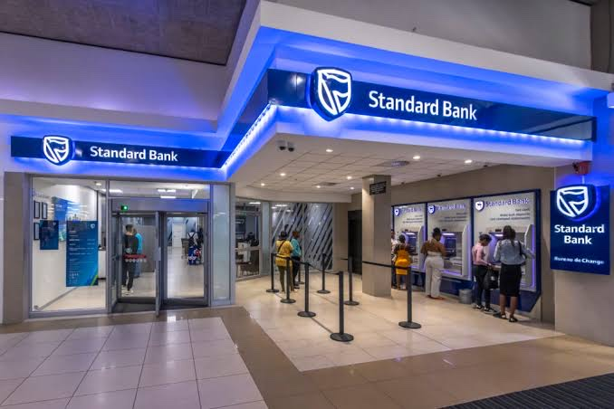

Added new customization for leasing menus to capture account data.
Created new tables and views to capture this data that is being sent to backend from menus.
Worked on Finacle scripting and ONS Customization.
Worked on PL/SQL, Shell Scripting and Finacle Scripting.
Debugging the issues in developed these menus.
Done Unit testing for the customizations added along with UAT testing team.
 Back to Portfolio